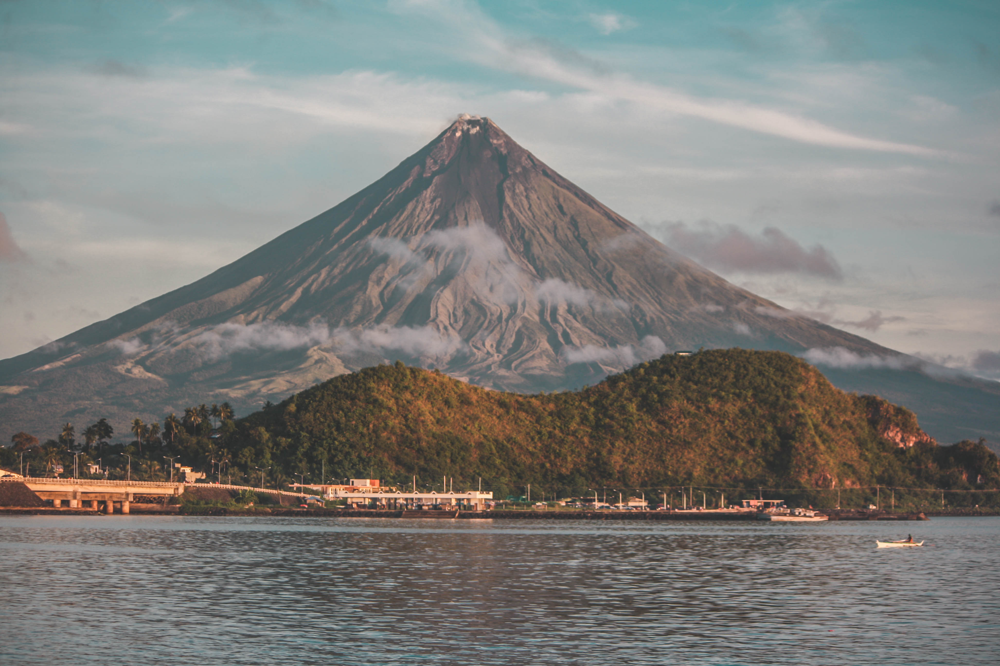

Witness the Majesty of Mayon Volcano
Mayon Volcano, located in Albay, is famous for its near-perfect cone shape and stunning landscapes. Whether you’re looking for adventure or simply wish to marvel at its beauty, Mayon offers unforgettable experiences.
What's Included:
- Transportation: Round-trip transfers from Legazpi City to Mayon Volcano attractions.
- Guided ATV Adventure: Explore the rugged terrain around Mayon with a thrilling ATV ride.
- Viewpoint Access: Visit the Lignon Hill Nature Park and Cagsawa Ruins for panoramic views of the volcano.
- Local Guide: Learn about the history, legends, and geology of Mayon Volcano.
- Meals: Enjoy a Bicolano lunch featuring local delicacies like Bicol Express and Laing.
- Souvenir Stop: Shop for handcrafted items and keepsakes.

Top Activities Around Mayon Volcano:
- ATV Adventure: Ride through lava trails and enjoy up-close views of Mayon Volcano.
- Visit Cagsawa Ruins: Explore the historic ruins of a church buried during the 1814 volcanic eruption.
- Lignon Hill Nature Park: Hike to the top for breathtaking views and zipline adventures.
- Photography: Capture stunning landscapes and the iconic cone of Mayon Volcano.
- Cultural Tour: Learn about local traditions and the stories surrounding the volcano.